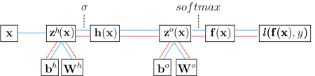

class: center, middle # The fundamentals of Neural Networks Guillaume Ligner - Côme Arvis .center[ <img src="images/ece_logo.png" style="width: 300px;" /> ] --- # Artificial neuron - reminder .center[<img src="images/artificial_neuron.svg" style="width: 300px;" />] - What is an artificial neuron ? -- .small90[ - As a math function : $neuron : \mathbf{x} \mapsto activationFunction(\langle \mathbf{w},\mathbf{x} \rangle + b)$ - activation functions : $tanh, sigmoid, reLU, eLU..$ ] -- </br> - The different steps : -- .small90[ - Perform a scalar product between $\mathbf{w}$ and $\mathbf{x}$ : $\mathbf{w}^T \cdot \mathbf{x}$ - Add a bias : at this step we have the pre-activation : $z = \mathbf{w}^T \cdot \mathbf{x} + b$ - Apply an activation function to the result to break linearity : $f(x) = g(\mathbf{w}^T \cdot \mathbf{x} + b)$ with $g$ being an activation function ] --- # Artificial neuron - reminder - How to interpret this ? -- - <sub>Activation close to $1$ means a concept statistically connected to the target has been extracted and is in $\mathbf{x}$. Why ? - <sub>After training, $\mathbf{w}$ can be seen as a concept to find in $x$ -- - <sub>Activation high ($reLU$, $eLU$) or close to $1$ ($\sigma$, $\tanh$) $\rightarrow$ $\langle \mathbf{w},\mathbf{x} \rangle$ very high - <sub> $\Leftrightarrow$ Angle $\widehat{(\overrightarrow{\mathbf{w}},\overrightarrow{\mathbf{x}})} \approx 0 \rightarrow$ $\mathbf{w}$ and $\mathbf{x}$ look in the same direction globally <br/>$\Leftrightarrow$ Means some concept represented by $\mathbf{w}$ has been spotted and extracted from $x$ [//]: # (Attends tu dis que si le scalar product est environ égal à 0 alors un concept a été détecté ? C'est pas plutôt si scalar product est élevé comme tu le disais en haut de la slide d'ailleurs ? Ou alors pas clair) [//]: # (- if some concept found --> ) [//]: # (- if scalr prod high then characteructic found --> output will be close to 1. This info will be used and combined with the others second layer) --- # Set of same depth neurons :<br/> a hidden layer .above-part[ .right-column40.small[<img src="images/artificial_neuron.svg" style="width: 370px;" />] -- .left-column60.small[ - What is a hidden layer of artificial neurons ? - <sub>A set of artificial neurons that extract similarly high-level concepts - <sub>Because same place in network ] ] -- - <sub>Hidden layer as a math function : - <sub>$layerNeurons : \mathbf{x} \mapsto activationFunction(W \cdot \mathbf{x} + \mathbf{b}) = g(W \cdot \mathbf{x} + \mathbf{b})$ - <sub>$\mathbf{x} \in \mathbb{R}^p$ $layerNeurons : \mathbb{R}^p \mapsto activationFunctionRange^m$, some examples: - <sub> $\mathbf{x} \in \mathbb{R}^p$ $layerNeurons : \mathbb{R}^p \mapsto$ __$]0, 1[^m$__ (__$\sigma$__) - <sub> $\mathbf{x} \in \mathbb{R}^p$ $layerNeurons : \mathbb{R}^p \mapsto$ __$]-1, 1[^m$__ (__$tanh$__) - <sub> $\mathbf{x} \in \mathbb{R}^p$ $layerNeurons : \mathbb{R}^p \mapsto$ __$[0, +\infty[^m$__ (__$reLU$__) - <sub>Here $W$ is a matrix; $W \in \mathbb{R}^{m \times p}$ and $\mathbf{b}$ a vector; $\mathbf{b} \in \mathbb{R}^m$ --- # Set of same depth neurons :<br/> a hidden layer - How to interpret this ? -- <br/> - <sub> Mathematically, $g(W \cdot \mathbf{x} + \mathbf{b})$ is the matrix way to write the vector: $$ \begin{bmatrix} g(\mathbf{w_1}\cdot\mathbf{x} + b_1)\\\\ g(\mathbf{w_2}\cdot\mathbf{x} + b_2)\\\\ \vdots\\\\ g(\mathbf{w_m}\cdot\mathbf{x} + b_m) \end{bmatrix} $$ - $\mathbf{w_i}$ being the $i^{th}$ line in matrix $W$ - $g$ being the activation function for this layer - $g(\mathbf{w_i}\cdot\mathbf{x} + b_i)$ being the $i^{th}$ neuron --- # Set of same depth neurons :<br/> a hidden layer - How to interpret this ? - <sub> Each neuron in a layer extracts some concepts from $x$ or previous layer - <sub> So if neurons in layer have concepts of same level abstraction then neurons in next layer will also have same abstraction level in them, only __higher__-level - <sub> Since it all starts with the __visible layer__ of "raw" neurons: $x$ then all neurons in hidden layers will represent same abstraction level concepts -- <br/> <br/> - <sub> Means a hidden layer represents a set of higher level concepts extracted from combining lower-level concepts in previous layer --- # Set of connected layers : <br/> the Multilayer Perceptron - MLP is at least $3$ : input layer $x$ , a hidden layer, output layer - <sub>Usually has many hidden layers <br/> <br/> .whole_width_image[] --- # Set of connected layers : <br/> the Multilayer Perceptron .center[] .whole_left_half[ - <sub>.firebrick[$\mathbf{z^0} = W_0 \cdot \mathbf{x} + \mathbf{b^0}$ ; $1^{st}$ set of pre-activations] - <sub>.grey[$\mathbf{h^0} = g(\mathbf{z^0}) = g(W_0 \cdot \mathbf{x} + \mathbf{b^0})$ $1^{st}$ hidden layer] - <sub>.grey[$\mathbf{z^1} = W_1 \cdot \mathbf{h^0} + \mathbf{b}^1$ ; $2^{nd}$ set of pre-activations] - <sub>.grey[$\mathbf{h^1} = g(\mathbf{z}^1) = g(W_1 \cdot \mathbf{h^0} + \mathbf{b^1})$ $2^{nd}$ hidden layer] - <sub>.grey[$\mathbf{h^j} = g(\mathbf{z^i}) = g(W_j \cdot \mathbf{h^i} + \mathbf{b^j})$; $j = i+1$ <br/>recurrent building of layers] ] .whole_right_half[ - <sub>.grey[$\mathbf{h^{n-1}} =$ last hidden layer of neurons. Next step : build the output] - <sub>.grey[$\mathbf{z^n} = W_n \cdot \mathbf{h^{n-1}} + \mathbf{b^{n}}$ last matrix product of parameters] - <sub>.grey[$\mathbf{f(x)} = softmax(\mathbf{z}^n)$ final output, here softmax for multiclass classification] ] --- # Set of connected layers : <br/> the Multilayer Perceptron .center[] .whole_left_half[ - <sub>$\mathbf{z^0} = W_0 \cdot \mathbf{x} + \mathbf{b^0}$ ; $1^{st}$ set of pre-activations - <sub>.firebrick[$\mathbf{h^0} = g(\mathbf{z^0}) = g(W_0 \cdot \mathbf{x} + \mathbf{b^0})$ $1^{st}$ hidden layer] - <sub>.grey[$\mathbf{z^1} = W_1 \cdot \mathbf{h^0} + \mathbf{b}^1$ ; $2^{nd}$ set of pre-activations] - <sub>.grey[$\mathbf{h^1} = g(\mathbf{z}^1) = g(W_1 \cdot \mathbf{h^0} + \mathbf{b^1})$ $2^{nd}$ hidden layer] - <sub>.grey[$\mathbf{h^j} = g(\mathbf{z^i}) = g(W_j \cdot \mathbf{h^i} + \mathbf{b^j})$; $j = i+1$ <br/>recurrent building of layers] ] .whole_right_half[ - <sub>.grey[$\mathbf{h^{n-1}} =$ last hidden layer of neurons. Next step : build the output] - <sub>.grey[$\mathbf{z^n} = W_n \cdot \mathbf{h^{n-1}} + \mathbf{b^{n}}$ last matrix product of parameters] - <sub>.grey[$\mathbf{f(x)} = softmax(\mathbf{z}^n)$ final output, here softmax for multiclass classification] ] --- # Set of connected layers : <br/> the Multilayer Perceptron .center[] .whole_left_half[ - <sub>$\mathbf{z^0} = W_0 \cdot \mathbf{x} + \mathbf{b^0}$ ; $1^{st}$ set of pre-activations - <sub>$\mathbf{h^0} = g(\mathbf{z^0}) = g(W_0 \cdot \mathbf{x} + \mathbf{b^0})$ $1^{st}$ hidden layer - <sub>.firebrick[$\mathbf{z^1} = W_1 \cdot \mathbf{h^0} + \mathbf{b}^1$ ; $2^{nd}$ set of pre-activations] - <sub>.grey[$\mathbf{h^1} = g(\mathbf{z}^1) = g(W_1 \cdot \mathbf{h^0} + \mathbf{b^1})$ $2^{nd}$ hidden layer] - <sub>.grey[$\mathbf{h^j} = g(\mathbf{z^i}) = g(W_j \cdot \mathbf{h^i} + \mathbf{b^j})$; $j = i+1$ <br/>recurrent building of layers] ] .whole_right_half[ - <sub>.grey[$\mathbf{h^{n-1}} =$ last hidden layer of neurons. Next step : build the output] - <sub>.grey[$\mathbf{z^n} = W_n \cdot \mathbf{h^{n-1}} + \mathbf{b^{n}}$ last matrix product of parameters] - <sub>.grey[$\mathbf{f(x)} = softmax(\mathbf{z}^n)$ final output, here softmax for multiclass classification] ] --- # Set of connected layers : <br/> the Multilayer Perceptron .center[<img src="images/mlp_h1.png" style="width:110%; margin-left: -5%; margin-top: -1%"/>] .whole_left_half[ - <sub>$\mathbf{z^0} = W_0 \cdot \mathbf{x} + \mathbf{b^0}$ ; $1^{st}$ set of pre-activations - <sub>$\mathbf{h^0} = g(\mathbf{z^0}) = g(W_0 \cdot \mathbf{x} + \mathbf{b^0})$ $1^{st}$ hidden layer - <sub>$\mathbf{z^1} = W_1 \cdot \mathbf{h^0} + \mathbf{b}^1$ ; $2^{nd}$ set of pre-activations - <sub>.firebrick[$\mathbf{h^1} = g(\mathbf{z}^1) = g(W_1 \cdot \mathbf{h^0} + \mathbf{b^1})$ $2^{nd}$ hidden layer] - <sub>.grey[$\mathbf{h^j} = g(\mathbf{z^i}) = g(W_j \cdot \mathbf{h^i} + \mathbf{b^j})$; $j = i+1$ <br/>recurrent building of layers] ] .whole_right_half[ - <sub>.grey[$\mathbf{h^{n-1}} =$ last hidden layer of neurons. Next step : build the output] - <sub>.grey[$\mathbf{z^n} = W_n \cdot \mathbf{h^{n-1}} + \mathbf{b^{n}}$ last matrix product of parameters] - <sub>.grey[$\mathbf{f(x)} = softmax(\mathbf{z}^n)$ final output, here softmax for multiclass classification] ] --- # Set of connected layers : <br/> the Multilayer Perceptron .center[] .whole_left_half[ - <sub>$\mathbf{z^0} = W_0 \cdot \mathbf{x} + \mathbf{b^0}$ ; $1^{st}$ set of pre-activations - <sub>$\mathbf{h^0} = g(\mathbf{z^0}) = g(W_0 \cdot \mathbf{x} + \mathbf{b^0})$ $1^{st}$ hidden layer - <sub>$\mathbf{z^1} = W_1 \cdot \mathbf{h^0} + \mathbf{b}^1$ ; $2^{nd}$ set of pre-activations - <sub>$\mathbf{h^1} = g(\mathbf{z}^1) = g(W_1 \cdot \mathbf{h^0} + \mathbf{b^1})$ $2^{nd}$ hidden layer - <sub>.firebrick[$\mathbf{h^j} = g(\mathbf{z^i}) = g(W_j \cdot \mathbf{h^i} + \mathbf{b^j})$; $j = i+1$ <br/>recurrent building of layers] ] .whole_right_half[ - <sub>.grey[$\mathbf{h^{n-1}} =$ last hidden layer of neurons. Next step : build the output] - <sub>.grey[$\mathbf{z^n} = W_n \cdot \mathbf{h^{n-1}} + \mathbf{b^{n}}$ last matrix product of parameters] - <sub>.grey[$\mathbf{f(x)} = softmax(\mathbf{z}^n)$ final output, here softmax for multiclass classification] ] --- # Set of connected layers : <br/> the Multilayer Perceptron .center[] .whole_left_half[ - <sub>$\mathbf{z^0} = W_0 \cdot \mathbf{x} + \mathbf{b^0}$ ; $1^{st}$ set of pre-activations - <sub>$\mathbf{h^0} = g(\mathbf{z^0}) = g(W_0 \cdot \mathbf{x} + \mathbf{b^0})$ $1^{st}$ hidden layer - <sub>$\mathbf{z^1} = W_1 \cdot \mathbf{h^0} + \mathbf{b}^1$ ; $2^{nd}$ set of pre-activations - <sub>$\mathbf{h^1} = g(\mathbf{z}^1) = g(W_1 \cdot \mathbf{h^0} + \mathbf{b^1})$ $2^{nd}$ hidden layer - <sub>$\mathbf{h^j} = g(\mathbf{z^i}) = g(W_j \cdot \mathbf{h^i} + \mathbf{b^j})$; $j = i+1$ <br/>recurrent building of layers ] .whole_right_half[ - <sub>.firebrick[$\mathbf{h^{n-1}} =$ last hidden layer of neurons. Next step : build the output] - <sub>.grey[$\mathbf{z^n} = W_n \cdot \mathbf{h^{n-1}} + \mathbf{b^{n}}$ last matrix product of parameters] - <sub>.grey[$\mathbf{f(x)} = softmax(\mathbf{z}^n)$ final output, here softmax for multiclass classification] ] --- # Set of connected layers : <br/> the Multilayer Perceptron .center[] .whole_left_half[ - <sub>$\mathbf{z^0} = W_0 \cdot \mathbf{x} + \mathbf{b^0}$ ; $1^{st}$ set of pre-activations - <sub>$\mathbf{h^0} = g(\mathbf{z^0}) = g(W_0 \cdot \mathbf{x} + \mathbf{b^0})$ $1^{st}$ hidden layer - <sub>$\mathbf{z^1} = W_1 \cdot \mathbf{h^0} + \mathbf{b}^1$ ; $2^{nd}$ set of pre-activations - <sub>$\mathbf{h^1} = g(\mathbf{z}^1) = g(W_1 \cdot \mathbf{h^0} + \mathbf{b^1})$ $2^{nd}$ hidden layer - <sub>$\mathbf{h^j} = g(\mathbf{z^i}) = g(W_j \cdot \mathbf{h^i} + \mathbf{b^j})$; $j = i+1$ <br/>recurrent building of layers ] .whole_right_half[ - <sub>$\mathbf{h^{n-1}} =$ last hidden layer of neurons. Next step : build the output - <sub>.firebrick[$\mathbf{z^n} = W_n \cdot \mathbf{h^{n-1}} + \mathbf{b^{n}}$ last matrix product of parameters] - <sub>.grey[$\mathbf{f(x)} = softmax(\mathbf{z}^n)$ final output, here softmax for multiclass classification] ] --- # Set of connected layers : <br/> the Multilayer Perceptron .center[<img src="images/mlp_output.png" style="width:110%; margin-left: -5%; margin-top: -1%"/>] .whole_left_half[ - <sub>$\mathbf{z^0} = W_0 \cdot \mathbf{x} + \mathbf{b^0}$ ; $1^{st}$ set of pre-activations - <sub>$\mathbf{h^0} = g(\mathbf{z^0}) = g(W_0 \cdot \mathbf{x} + \mathbf{b^0})$ $1^{st}$ hidden layer - <sub>$\mathbf{z^1} = W_1 \cdot \mathbf{h^0} + \mathbf{b}^1$ ; $2^{nd}$ set of pre-activations - <sub>$\mathbf{h^1} = g(\mathbf{z}^1) = g(W_1 \cdot \mathbf{h^0} + \mathbf{b^1})$ $2^{nd}$ hidden layer - <sub>$\mathbf{h^j} = g(\mathbf{z^i}) = g(W_j \cdot \mathbf{h^i} + \mathbf{b^j})$; $j = i+1$ <br/>recurrent building of layers ] .whole_right_half[ - <sub>$\mathbf{h^{n-1}} =$ last hidden layer of neurons. Next step : build the output - <sub>$\mathbf{z^n} = W_n \cdot \mathbf{h^{n-1}} + \mathbf{b^{n}}$ last matrix product of parameters - <sub>.firebrick[$\mathbf{f(x)} = softmax(\mathbf{z}^n)$ final output, here softmax for multiclass classification] ] --- # Set of connected layers : <br/> the Multilayer Perceptron - Interpretation of MLP: a representation learning point of view .small80[ - Networks extracts high-level concepts that explain the output - High-level concepts extracted from smaller, simpler concepts ($1^{st}$ layers) ] <br/> -- .left-column30.small[ ] -- .right-column70.small80[- Starts with visible layer: $x$ to build the $1^{st}$ hidden layer] .right-column70.small80[- Simple concepts extracted: edges in image] -- .right-column70.small80[- Layers extract higher level concepts:] -- .right-column70.small80[- Given edges extracted, $2^{nd}$ layer can combine them to extract corners, contours] -- .right-column70.small80[- Given corners and contours, $3^{rd}$ layer can combine them to detect parts of the object] -- .right-column70.small80[- Given parts of the object, object in image can be recognized] --- # Element-wise activation functions - Only non linear blocks in neural networks - Element-wise functions that map the matrix product to the final output of a layer .left-column60.center[ **ReLu**: the default activation function in feedforward neural networks ] .right-column40.small70[ - Very close to linear: - preserve linear model advantages that make them easy to optimize with gradient-based methods - preserve also many of the properties that make linear models generalize well - Being zero for negative inputs allows some sparsity and thus a regularized solution ] --- # Element-wise activation functions .center[] .center.small60[**Sigmoid** and **Hyperbolic tangent**: squashing activation functions] .small60[ - Problem: can suffer from **saturation** and make gradient-based learning difficult, meaning that it can become very flat and insensitive to small changes in its input - As a consequence, they are preferably used only as **output units**, mostly for binary classification tasks, in which the log of the cross-entropy loss used undoes the exp of these activations ] --- # Softmax activation function $$ softmax(\mathbf{x}) = \frac{1}{\sum_{i=1}^{n}{e^{x_i}}} \cdot \begin{bmatrix} e^{x_1}\\\\ e^{x_2}\\\\ \vdots\\\\ e^{x_n} \end{bmatrix} $$ - Function directly applied on a whole vector and return a vector of values in $(0, 1)$ that sums to 1 - So, it can naturally represent a probability distribution, </br>with $p(Y = c|X = \mathbf{x}) = \text{softmax}(\mathbf{z}(\mathbf{x}))_c$ being the probability that the class $c$ is the associated class for the sample $\mathbf{x}$ according to our model, and $\mathbf{z}(\mathbf{x})$ being our pre-activation vector - In practice, the softmax activation function is generally used for multi-class classification problems --- # Training the network - Consider a neural network with only one hidden layer:</br>the actionable parameters are $( \mathbf{W}^h; \mathbf{b}^h; \mathbf{W}^o; \mathbf{b}^o ) = \mathbf{\Theta}$ - The goal is to find a $\mathbf{\Theta}$ that minimize the negative log-likelihood:</br> .center[$\mathbf{\Theta} = \underset{\mathbf{\Theta}}{\operatorname{argmin}} nll(\Theta, \mathbf{x}, y) = - \log p(y | \mathbf{x} ; {\mathbf{\Theta}})$] - On a full training dataset $D$: $$ L\_D(\Theta) = -\frac{1}{|D|} \sum\_{i \in D} nll(\Theta, \mathbf{x}_i, y_i) + \gamma \Omega(\mathbf{\Theta}) $$ $\gamma \Omega(\mathbf{\Theta}) = \gamma (||W^h||^2 + ||W^o||^2)$ is an optional regularization term. --- # Binary classification network - We have:</br> - $Y \in [0, 1]^n$, with $n$ the number of examples - $Y|X=\mathbf{x} \sim Bernoulli(b=f(\mathbf{x} ; \mathbf{\Theta}))$,</br> with $f$ the function constructed by our neural network - A **sigmoid** output activation function is usually used to output a probability - The loss function to minimize in this case is the **binary cross entropy** --- # Multiclass classification network - We have:</br> - $Y \in [0, K-1]^n$, with $n$ the number of examples - $Y|X=\mathbf{x} \sim Multinoulli(\mathbf{p}=\mathbf{f}(\mathbf{x} ; \Theta))$,</br> with $\mathbf{f}$ the function constructed by our neural network - A **softmax** output activation function is usually used to output a probabilities distribution - The loss function to minimize in this case is the **categorical cross entropy** --- # Regression network - We have:</br> - $Y \in \mathbb{R}^n$, with $n$ the number of examples - $Y|X=\mathbf{x} \sim \mathcal{N}(\mathbf{\mu}=\mathbf{f}(\mathbf{x} ; \Theta), \sigma^2 \mathbf{I})$,</br> with $\mathbf{f}$ the function constructed by our neural network - Usually we use an **identity** or a **ReLu** activation output function - The loss function to minimize in this case is the **mean squared error** --- # Neural network optimization: a stochastic approach .big110[ - Deep learning datasets are usually huge: $10^6 \sim 10^8$ training examples - In consequence, computing the gradient on the full training dataset can be extremely costly - To tackle this, a solution is the compute the gradient of a **minibatch of samples** and perform an update step with it - This gradient is an **unbiased estimation** of the full gradient if the minibatch sampling is performed randomly - Doing so, we improve the computation cost from $o(n)$ to $o(b)$, n and b being respectively the number of samples in the full dataset and in a minibatch ] --- # Stochastic Gradient Descent (SGD) .center[] - Potential problem: the convergence and stability of SGD are strongly dependant of the learning rate $\epsilon$. - In addition, loss functions are often non-convex in deep learning.</br>How to tackle flat regions and use high curvature to our advantage? --- # Optimization with momentum - The term **momentum** comes from a physical analogy, in which the negative gradient is a force moving a particle through the parameter space - The idea is to consider **past gradients** as an **inertia** that leads the learning updates to accelerate or decelerate .left-column50[] .right-column50[ Here an example of learning iterations through a parameter space with high curvature.</br></br> The red path indicates the path followed by the momentum learning rule as it minimizes this function. We see that the standard gradient descent wastes more time bouncing around, while the one with momentum fit better the curvature ] --- # SGD with momentum .center[] .small80[ - Gradients history now stored in the velocity variable $v$ - The hyperparameter $\alpha$ in $[0, 1]$ controls the weight of previous gradients to the current step update - Larger updates where the gradient sign is constant to accelerate in low curvature areas - $\alpha \to 0$ means no momentum at all and thus classic SGD - high $\alpha$ leads to give more importance to the accumulated gradients ] .small80[ - Still a problem: how to control the learning rate $\epsilon$ more efficiently? ] --- # RMSProp: the adaptive learning way - RMSProp, or Root Mean Square Propogation, proposes another approach: have a different learning rate **for each parameter** to update - Particulary suited to non-convex setting, changes the gradient accumulation into an **exponentially weighted moving average** - Doing so, parameters which had large gradients over time, will have smaller learning rates --- # RMSProp: the adaptive learning way .center[] .center[A specialized learning rate for each parameter based on their accumulated squared derivatives] --- # Adam: the state of the art - The "Adaptive moments" optimization algorithm - Most used first order optimization method in the real world of deep learning - Combines the advantages of both **RMSProp** and **Momentum** and include some others improvements - Is generaly robust to the choice of hyperparameters --- # Optimizers comparison around a saddle point .left-column50[<img src="images/saddle_point_optimizers_2D.gif" style="width: 375px;" /></br></br>] .right-column50[<img src="images/saddle_point_optimizers_3D.gif" style="width: 375px;" /></br></br>] .center[Algorithms that use momentum and adaptive learning rate methods perfom better at such critical point] --- # Computing gradients: chain rule and backpropagation .big120[ - Chain rule: used to compute the derivatives of functions formed by composing other functions<br/><br/> - Backpropagation is the algorithm that makes effective use of the chain rule to compute the gradient of some loss with respect to the model's parameters ] --- # Chain rule .big140[**Chain rule scalar to scalar case**] .big110[ - If $f(x) = h(g(x)): x \xrightarrow[\text{}]{g} v$ $\\xrightarrow[\text{}]{h} z$ <br/> and $\frac{\mathrm d z}{\mathrm d v}$, $\frac{\mathrm d v}{\mathrm d x}$ are known <br/> then we can compute $\frac{\mathrm d z}{\mathrm d x} = \frac{\mathrm d z}{\mathrm d v} \cdot \frac{\mathrm d v}{\mathrm d x}$ ] .big110[ - Since neural nets are made of nested blocks differentiable everywhere we can use the chain rule everywhere ] --- # Chain rule .big140[**Chain rule general case**] .big110[ - $f(\mathbf{x}) = \mathbf{x} \in \mathbb{R}^m \xrightarrow[\text{}]{g} \mathbf{v} \in \mathbb{R}^n$ $\xrightarrow[\text{}]{h} z \in \mathbb{R}$ - $f(\mathbf{x})$ maps from vector to other vector to scalar ] -- .big110[ - $\frac{\partial z}{\partial \mathbf{x}\_{i}} = \sum\_{j} \frac{\partial z}{\partial \mathbf{v}\_j} \cdot \frac{\partial \mathbf{v}\_j}{\partial \mathbf{x}\_i}$ ] -- .big110[ - Vector notation: $\frac{\partial z}{\partial \mathbf{x}\_{i}} = (\frac{\partial \mathbf{v}}{\partial \mathbf{x}\_i})^T \cdot \nabla\_{\mathbf{v}} z = (\nabla\_{\mathbf{x}} z)\_i$ ] -- .big110[ - Vector notation whole gradient: $\nabla\_{\mathbf{x}} z = (\frac{\partial \mathbf{v}}{\partial \mathbf{x}})^T \cdot \nabla\_{\mathbf{v}} z$ </br> where $\frac{\partial \mathbf{v}}{\partial \mathbf{x}}$ is the $n × m$ Jacobian matrix of $g$ ] --- # Backpropagation Back-propagation refers to the method for **computing** the gradient Another algorithm, such as stochastic gradient descent, makes use of it to compute gradients and perform learning We are going to see how it works through 2 examples: - A simple toy example - A real life NN-involving example --- # Backpropagation A simple toy example: - We have gradients of $y$ with respect to $l_1$ - We have gradients of $l_1$ with respect to $l_0$ - This allows to backpropagate gradients of $y$ from with respect to $l_1$ to with respect to $l_0$ .left-column50[] .right-column30[ Node .firebrick[b] derivative calculation: $\frac{\partial e}{\partial b} = \sum\_{j \in \(c, d\)} \frac{\partial e}{\partial j} \cdot \frac{\partial j}{\partial b}$ ] --- # Backpropagation A real life NN-involving example: .center[] Here the loss is the negative loglikelihood.<br/> $f\_\theta(\mathbf{x}) = P(y|\mathbf{x}) $ modeled by your model<br/> .left-column60[ $ f(\mathbf{x}) = \begin{bmatrix} P\_\theta(y=0|\mathbf{x})\\\\ P\_\theta(y=1|\mathbf{x})\\\\ \vdots\\\\ P\_\theta(y=K-1|\mathbf{x}) \end{bmatrix} = softmax(z^o(x)) $ ] .right-column30.small80[ - For a given sample with true $y = k$ loss is $-\log(P\_\theta(y=k|\mathbf{x}))$ - $loss = -\log(f(\mathbf{x})\_k) $<br/> ] --- # Backpropagation Compute partial derivatives of the loss - $\frac{\partial l(\mathbf{f(x)}, y)}{\partial \mathbf{f(x)}\_i} = \frac{\partial -\log \mathbf{f(x)}\_y}{\partial \mathbf{f(x)}\_i} = \frac{-1\_{y=i}}{\mathbf{f(x)}\_y}$ .center[] --- # Backpropagation Gradients - $\nabla\_{\mathbf{z}^o(\mathbf{x})} l(\mathbf{f(x)}, y) = \mathbf{f(x)} - \mathbf{e}(y)$ - $\nabla\_{\mathbf{b}^o} l(\mathbf{f(x)}, y) = \mathbf{f(x)} - \mathbf{e}(y)$ because $\frac{\partial \mathbf{z}^o(\mathbf{x})\_i}{\partial \mathbf{b}^o\_j} = 1\_{i=j}$ Partial derivatives related to $\mathbf{W}^o$ - $\frac{\partial l(\mathbf{f(x)}, y)}{\partial W\_{i,j}} = \sum\_{k} \frac{\partial l(\mathbf{f(x)}, y)}{\partial \mathbf{z}^o(\mathbf{x})\_k} \frac{\partial \mathbf{z}^o(\mathbf{x})\_k}{\partial W^o\_{i,j}}$ - $\nabla\_{\mathbf{W}^o} l(\mathbf{f(x)}, y) = (\mathbf{f(x)} - \mathbf{e}(y)) . \mathbf{h(x)}^\top$ --- # Backprop gradients .small90[ **Compute activation gradients** - $\nabla\_{\mathbf{z}^o(\mathbf{x})} l = \mathbf{f(x)} - \mathbf{e}(y)$ **Compute layer params gradients** - $\nabla\_{\mathbf{W}^o} l = \nabla\_{\mathbf{z}^o(\mathbf{x})} l \cdot \mathbf{h(x)}^\top$ - $\nabla\_{\mathbf{b}^o} l = \nabla\_{\mathbf{z}^o(\mathbf{x})} l$ **Compute prev layer activation gradients** - $\nabla\_{\mathbf{h(x)}} l = \mathbf{W}^{o\top} \nabla\_{\mathbf{z}^o(\mathbf{x})} l$ - $\nabla\_{\mathbf{z}^h(\mathbf{x})} l = \nabla\_{\mathbf{h(x)}} l \odot \mathbf{\sigma^\prime(z^h(x))}$ **Compute prev layer params gradients** - $\nabla\_{\mathbf{W}^h} l = \nabla\_{\mathbf{z}^h(\mathbf{x})} l \cdot \mathbf{x}^\top$ - $\nabla\_{\mathbf{b}^h} l = \nabla\_{\mathbf{z}^h(\mathbf{x})} l$ ] --- # Initialization, normalization How should we proceed ? -- <br/> - Normalize input data so each feature falls in same value range:<br/> - <sub>Can be $[0,1]$, $]-1,1[$ etc. - <sub>This way derivatives don't start too big or too small because of natural range -- <br/> <br/> - Normalize input data so each features falls in same std range: - <sub>Careful std too small: training slow because of small derivatives - <sub>Careful std too big: risk of divergence because of too big derivatives --- # Initialization, normalization .small85[ - Initialization of matrix of parameters $W_i$: - At point zero network $f(x)$ is a constant: no gradient, no learning - Constant init: hidden units collapse by symmetry - Solution: random init, ex: $w \sim \mathcal{N}(0, 0.01)$ - however $\mathcal{N}$ may lead to extreme values making training unstable ] -- .small85[ - Initialization of vectors of biases parameters $b_i$: - Biases ought to be initialized to zero - Random biases init may lead to dead units by making the relu activation zero or saturating $tanh$ and $\sigma$ activations i.e pushing the activations to point where their gradient $= 0$ ] -- .small85[ - Better inits: - Xavier Glorot - Kaming He & orthogonal ] --- # Batch Normalization .big100[**Why ?**] <br/> -- .small85[ - To reduce internal "internal covariate shift" ] -- .small85[ - Covariate shift is a change in the data distribution of (X,Y) the model trained on - ex: a model trained on detecting cars from a dataset that had only grey and black cars and then performs in real life on data that has only yellow cars. Most likely performance will drop. <br/> ] -- .small85[ - Internal co-variate shift is the fact that update of a parameter $p$ is decided based on a fixed representation of the network ] .small85[ - In practice all the parameters of the network are updated at once and all the weights in the network change - Changes are propagated through the network, deep layers end-up rather different - Update of the parameters that follow them are less suited to post-update state of deep layers ] --- # Batch Normalization .big100[**Advantages**] -- .big110[ - Batch Normalization used to improve Back-Propagation - Eases initialization of NN parameters: makes training less sensitive to starting points so can be less cautious about it - Limits the internal co-variate shift by normalizing the data over and over again ] -- .big110[ - Networks train faster : more parameters but converges much faster - Provides some regularization - Allows to build better very deep networks ] --- # Batch Normalization .center[] --- # Regularization .small90[ - A central ML problem: make the algorithm perform well on never seen samples - Srategies designed to lower test error even at expense of train error refered to as regularization techniques ] -- .small90[ General definition: - “Any modification we make to a learning algorithm that is intended to reduce its generalization error but not its training error” - Some examples: - Putting extra constraints on a machine learning model, such as adding restrictions on the parameter values - Adding extra terms in the objective function that can be thought of as corresponding to a soft constraint on the parameter values ] --- # Regularization .big120[**Dropout**] -- .small80[ - For each neuron: - Either remove influence of a neuron setting its activation to $0$ with probability $p$ - Or keep activation as it is with probability $1-p$ - Bernoulli mask sampled for a forward pass / backward pass pair - Typically only enabled at training time ] -- .left-column50[ <br/> .small80[Neural Net __without__ dropout]<br/> ] -- .right-column50[ <br/> .small80[Neural Net __with__ dropout]<br/> ] --- # Regularization .big120[**Dropout interpretation**] -- .small80[ - Leads to more redundant representation of the data: - concept extracted by a neuron may not be considered in next layer if neuron killed - means concept has to be extracted at different neurons to be propagated forward - leads to redundant representation of data] -- .small80[ - Reduces dependency on a particular neuron thus reduces overfitting: - Harder for the model to rely on a particular neuron to learn irrelevant features for the prediction that cannot generalize] -- .center[ <br/>At test time, multiply weights by $p$ to keep same level of activation] --- # Regularization .big120[**Dropout cancelled: Overfitting Noise**] .center[<br/>] --- # Regularization .big120[**Dropout: a bit**] .center[<br/>] --- # Regularization .big120[**Dropout too much: Underfitting**] .center[<br/>] --- # Choosing a Framework .small80[ Focus on $3$ Frameworks: TensorFlow, PyTorch, Keras] <br/> <br/> .center[] <br/> -- .small80[- Most famous Deep Learning framework] .small80[- More suited to huge production deployments] -- .small80[- TensorFlow comes with two tools that are widely used: - TensorBoard for the effective data visualization of network modeling - TensorFlow Serving for the rapid deployment of new algorithms/experiments while retaining the same server architecture and APIs ] -- .small80[- Full of documentation and walkthroughs] --- # Choosing a Framework .small80[ <br/> <br/> .center[] ] -- .small80[- PyTorch was introduced by Facebook, amongst others, in January 2017] -- .left-column50.small80[ - GPU acceleration, efficient usages of memory, dynamic computational graphs - Graph defined by run, very useful when input can vary like with unstructured data like text ] .right-column50[] -- .left-column100.small80[ - Best compromise between full flexibility and ease of use but currently **less suited to production** - Right now many Pytorch models cannot be converted to full binaries, which is prefered for production ] --- # Choosing a Framework .small80[ <br/> <br/> .center[] ] <br/> <br/> -- .small80[- Deep Learning Python wrapper of Deep Learning frameworks: runs on either TensorFlow or Theano as backends] .small80[- Very easy to handle] -- .small80[- Suited to fast and easy prototyping by constructing effective neural networks] .small80[- Primary usage of Keras is in classification, text generation and summarization, tagging, and translation, along with speech recognition and more] .small80[- Not as flexible as Tensorflow and PyTorch when it comes to designing very custom behaviors] --- # Keras: the sequential API - Easiest way to quickly create a model - Multiclass neural network example: .center[] --- # Keras: the functional API .small80[ Why use functional API rather rather than Sequential API ? - with sequential API not straightforward to define models that may have multiple different input sources, produce multiple output destinations or models that re-use layers - Functional API allows to define easily multiple input or output models and models that share layers of parameters How does it work ? - First create instances of layers and connect them between each other in pairs - Then define a Model that specifies the layers to act as the input and output to the model ] --- # Keras: the functional API .left-column70.small70[ 1 - Defining Input - Unlike the Sequential model, you must create and define a standalone Input layer that specifies the shape of input data - The input layer takes a tuple argument that indicates the shape of the input - If input is a vector, shape leaves room for the mini-batch size, thus often hanging last axis shape value 2 - Connecting - The layers in the model are connected pairwise - When defining a layer, you specify which layer is the input to this layer - Input to layer is placed between brackets after defining layer 3 - Creating the Model - After creating layers and connecting, define the model - Used to summarize, fit, evaluate and make predictions - Keras has a Model class. You only have to specify input and output layers ] .right-column30[ <br/> <br/> <br/> <br/> <br/> <br/> <br/> <br/> <br/> <br/> <br/> <br/> <br/> <br/> ] --- # Keras: the functional API .small80[Example Functional API code for Multilayer Perceptron]<br/><br/> -- .small80[Code] .center[] -- .small80[Network structure] .center[]